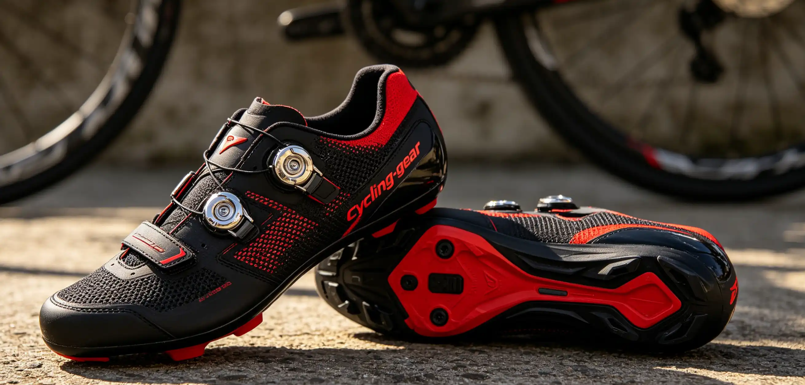

You are standing in a bike shop staring at two helmets. One costs $65 and has a basic CPSC sticker. The other costs $250 and boasts MIPS, WaveCel, and a Virginia Tech 5-star rating. Both meet the legal minimum safety standard—so what are you actually paying for? The difference could matter when you hit the pavement at 20 mph. This article decodes the alphabet soup of helmet safety technologies, explains the science behind rotational impact protection, and helps you determine how much to spend on the helmet that could save your life.
Why I Started Taking Helmet Tech Seriously
In 2019, I was descending a local canyon road near Boulder, Colorado, at about 38 mph when a car pulled out of a blind driveway. I grabbed too much front brake, went over the bars, and landed head-first on the asphalt. My Giro Synthe with MIPS was destroyed—the outer shell was cracked in three places and the MIPS liner had sheared completely. I walked away with a mild concussion and a broken collarbone. The ER doctor at Boulder Community Health told me something I will never forget: "The rotational technology in your helmet probably saved you from a traumatic brain injury." Before that crash, I chose helmets based on weight, ventilation, and color. After that crash, I research every helmet I buy as if my life depends on it—because it does. I now own three helmets for different riding conditions, and I replace them every three years regardless of visible damage.
Understanding Helmet Safety Standards: CPSC, EN 1078, and CE
Every helmet sold in the United States must pass the CPSC (Consumer Product Safety Commission) standard 16 CFR Part 1203, which tests for linear impact absorption. The test drops a helmeted headform onto a flat anvil and a hemispherical anvil from heights of 2.0 and 1.2 meters respectively, measuring peak acceleration. The helmet must keep acceleration below 300 g (300 times the force of gravity). In Europe, the EN 1078 standard is slightly less stringent, with a 250 g limit. The Snell B-95A standard, a voluntary certification from the Snell Memorial Foundation, is stricter than CPSC, requiring helmets to withstand multiple impacts to the same location and using a hotter conditioning protocol. Importantly, none of these traditional standards test for rotational forces—the twisting motion that occurs when your head hits the ground at an angle. Research published in the journal Accident Analysis & Prevention shows that rotational acceleration is the primary cause of diffuse axonal injury, the most common type of severe traumatic brain injury in cycling accidents.
MIPS: The Pioneer of Rotational Protection
MIPS (Multi-directional Impact Protection System) was developed by Swedish neurosurgeon Hans von Holst and researcher Peter Halldin in 2001. The technology consists of a low-friction slip-plane layer between the helmet liner and the outer shell. In an angled impact, the MIPS layer allows the helmet to rotate 10-15mm relative to the head, reducing rotational forces transmitted to the brain. Independent testing by Virginia Tech's Helmet Lab shows that MIPS-equipped helmets reduce rotational acceleration by an average of 30-40% compared to non-MIPS versions of the same helmet. The technology adds 20-30 grams of weight and approximately $20-$30 to the retail price. As of 2026, MIPS is licensed by over 150 helmet brands, including Giro, Bell, Specialized, POC, and Smith. The latest iteration, MIPS Integra, embeds the slip-plane directly into the helmet padding, making it nearly invisible. A Giro Aether MIPS ($300) and a Giro Agilis MIPS ($100) both use MIPS, but the Aether uses a dual-density EPS foam and deeper channels for better cooling.
WaveCel: The Cellular Alternative
WaveCel, developed by orthopedic surgeon Dr. Steve Madey and biomechanical engineer Dr. Michael Bottlang, takes a fundamentally different approach. Instead of a slip-plane, WaveCel uses a collapsible cellular structure that looks like a honeycomb of plastic. In an impact, the cells crumple, flex, and glide in three stages to absorb both linear and rotational energy. Trek-owned Bontrager exclusively licenses WaveCel for its helmets. According to Bontrager's own testing (validated by Virginia Tech), WaveCel helmets are up to 48 times more effective at preventing concussions than standard EPS helmets in certain impact scenarios. However, these claims have been controversial. A 2019 study by the independent helmet certification group at the Legacy Research Institute found that while WaveCel performed well, the "48x" figure applied only to a specific test condition. The Bontrager Specter WaveCel ($149) weighs 340 grams in size medium—about 30-40 grams heavier than an equivalent MIPS helmet. The Bontrager XXX WaveCel road helmet ($299) is their flagship model, earning a Virginia Tech 5-star rating.
Other Rotational Protection Systems: SPIN, Koroyd, and Fluid
POC's SPIN (Shearing Pad Inside) uses silicone gel pads integrated into the helmet liner that allow the helmet to shear relative to the head during impact. Unlike MIPS, SPIN has no moving parts and is fully integrated into the padding. The POC Ventral Air MIPS ($275) actually combines both MIPS and SPIN-inspired padding. Koroyd, used by Smith and Endura, is a welded tube structure that looks like a bundle of drinking straws. It crushes on impact to absorb energy and is claimed to absorb 30% more energy than EPS foam alone. The Smith Trace MIPS ($250) pairs Koroyd with MIPS for a dual-layer approach. Fluid technology, found in Kali Protectives helmets, uses a non-Newtonian gel layer that stiffens on impact—similar to the shear-thickening fluid used in some military body armor. The Kali Chakra Plus ($100) is one of the most affordable helmets with rotational protection technology, using a combination of Conehead EPS foam and a low-density layer.
Helmet Technology Comparison Table
| Technology | Mechanism | Weight Added | Price Premium | Example Helmet | Virginia Tech Rating |
|---|---|---|---|---|---|
| MIPS (Standard) | Slip-plane liner | 20-30g | $20-$30 | Giro Agilis MIPS ($100) | 5 stars |
| MIPS Integra | Embedded slip-plane | 15-20g | $30-$40 | Giro Aether MIPS ($300) | 5 stars |
| WaveCel | Collapsible honeycomb | 30-50g | $50-$80 | Bontrager Specter ($149) | 5 stars |
| POC SPIN | Silicone shear pads | 10-15g | $30-$50 | POC Ventral Air MIPS ($275) | 5 stars |
| Koroyd | Welded tube crush | 25-40g | $40-$60 | Smith Trace MIPS ($250) | 5 stars |
| Kali Fluid | Non-Newtonian gel | 15-20g | $10-$20 | Kali Chakra Plus ($100) | 4 stars |
| Standard EPS | Foam crush | 0g | $0 | Giro Register ($65) | 3-4 stars |
Who This Is For (And Who It's Not)
Best for MIPS: The vast majority of cyclists. MIPS is the most widely available, independently tested, and affordable rotational protection technology. If you ride on roads with cars, a MIPS helmet is the minimum you should accept.
Not ideal for MIPS: Budget-constrained riders who cannot afford the $20-$30 premium. A well-fitting non-MIPS helmet that meets CPSC standards is still far better than no helmet.
Best for WaveCel: Commuters and urban riders who face the highest risk of car-related collisions. WaveCel's multi-stage energy absorption is designed for the higher-energy impacts typical of vehicle-bicycle crashes.
Not ideal for WaveCel: Weight-conscious road racers and climbers who prioritize ventilation and grams. WaveCel helmets are consistently heavier and less ventilated than MIPS equivalents.
Best for Koroyd: Mountain bikers and gravity riders who face high-speed impacts and want maximum energy absorption. Koroyd's structural crush is well-suited to the types of impacts common in off-road crashes.